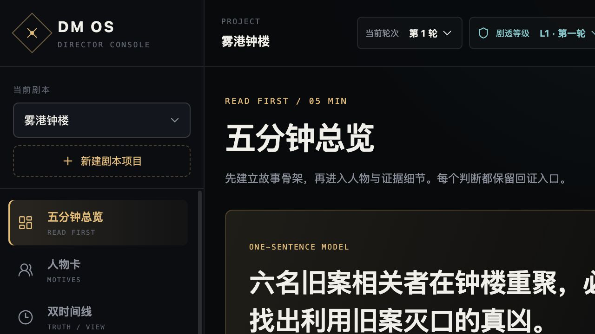

五分钟总览、人物动机、双时间线、关系、线索与场次控场；支持主持模式与剧透级别。
CASE 03 · AI WORKFLOW / CREATIVE OPS
DM 排练系统
把几百页商业剧本、角色本、线索和演绎视频，变成 DM 与演员在排练和现场能立即调用的行动系统。
角色产品设计者／DM 实际用户／领域建模者
技术Next.js／TypeScript／本地文档编译
状态合成数据 Demo 已验收，真实材料仅本地

THE PROBLEM
AI 能总结剧情，但现场需要的是“现在能说什么”。
多份 PDF、角色本、主持人手册和线索之间容易冲突。纯摘要会丢失页码证据，也可能提前泄露后续真相；演员上场前更需要 Cue、动作、台词和退场条件。
我把系统拆成两个交付面：DM OS 管理故事模型、轮次与证据；演员手册把人物行动线编译成长版排练材料与短版现场卡。
EVIDENCE PIPELINE
每个判断都能回到原件。
PDF 逐页提取→页内 Chunk→结构化故事模型→Exact Quote 回证→按轮次防剧透
WHAT SHIPPED
从阅读系统到现场执行系统。
documentId、物理页码、chunkId、原句与哈希共同定位；残缺 OCR 不会被静默当作完整原文。
人物关系、共同回忆、逐幕状态、必背台词、Cue 表和备场清单，分别服务深度排练与临场调用。
不确定时回到原件；道具、流程或现场口令冲突时，以现场总控和店内确认优先。
ACTOR HANDBOOK
我做的演员手册，不是一次“导出成功”。
代表性长版演员手册达到 212 页、358 个书签项。PDF 经过元信息、严格解析、文本层、字体和 212／212 页渲染检查，没有空白页、黑页、主内容裁切或中文方框。
完整 PDF 含商业剧本内容，因此不在公开 GitHub 分发；这里展示我设计的手册结构、生产流程和验收证据。并且“本地已验证”不等于“店内导演定版”，现场边界仍需真实排练确认。
VERIFIED STATUS
当前真实状态
- 合成六人三轮 Demo 的 typecheck、lint、build 与 62 项测试通过。
- 桌面与 390 px 移动端界面完成浏览器 QA。
- 真实商业剧本只在本地授权范围内处理；未公开原文、OCR、线索、音视频或完整手册。
- 真实模型 Provider 尚未做 API Key 烟测；部分剧本仍等待现场排练验收。